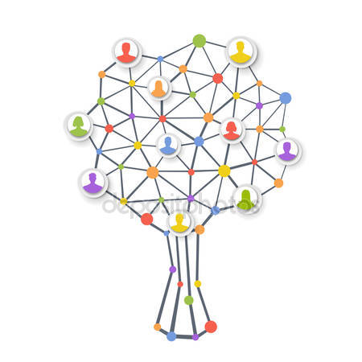

If we want to move forward as a humanity we must be aware of the collective consciousness. In the previous chapter I was asserting that space connects us all. Well, it does. We are interconnected. We are connected through space at the level of the heart chakra (4th chakra) and thus it creates a circuit. The whole world is a big wireless network. The environment in which this wireless network emits is consciousness. We are on a human level emiters/receivers. The vibrations are sent through space. Space is full of information, of consciousness. As i stated in the previous chapter an atom is 99.9999999999996% empty space. The information and the potential of energy it is in what we call the vacuum. In space it exists the whole electromagnetic spectrum, visible light it is just a small amount of it. We can experiment the whole electromagnetic spectrum with our mind, consciousness and soul. But with our bodies we can only experiment visible light. So, on a logarithmic scale of frequency, visible light is 2.3% of the whole electromagnetic spectrum, while on a linear scale it is 0.0035%. We are all one, and one we are all, in the both ways. There is this saying that our wise men left to us “If a single human is lost, the entire universe is lost” – i would say the multiverse.
Well, love and consciousness are fluid. And this circuit I am describing works like principle of communicating vessels. So, in order to make this circuit to work and the fluid to flow freely within it we must apply love. The first one in the circuit who you should love is yourself. Love yourself. Then you would be able to love others. How can you love others if you don’t even love yourself ? When you managed to love yourself you will be able to spread your love around that circuit. I would recommend to evolve into the 4th dimension to be able to love authentic. This circuit works under the term “laws of love” that we here it so often if you are familiar in some way with spirituality. Jesus used this term for his teachings. The laws of love work like this in the circuit: a member of this graph(because ultimately the wireless network is a graph) should apply love to his neighbour members(nodes of this graph) in this circuit. If the energy is blocked, it can be unblocked with forgiveness. This is what forgiveness does, it unblocks a relationship (edge in the graph) and lets the love flow freely again in the circuit. If you have an enemy you should respond with love (“turning the cheek” is a metaphor and it simply means to respond with love) and this way you will make him to enter the circuit of love. A member of this graph should not be violent or aggressive. I am not saying that he should repress his violence because it is in our nature to be violent. He should transform his agressiveness to have the power to respond with love. It is called passive aggressiveness. If you practice this technique you will be able to respond with love to your “enemies”. A member(node) of this graph in order to maintain his relationships(edges) should be kind, friendly and polite because these are expressions of love and of a civilised person. Love is civilising. So why did Jesus told us to love our neighbour ? Why he didn’t just tell us to love any person ? The answer we find it in the existence of this graph(circuit) and the interconnections between us. You can’t skip the members of your group to jump and try to love another person that is not directly connected to you. It is a waste of energy. Mathematically, you can’t do it, your love has to manifest with plenitude to the nodes at level 1 distance. Let’s consider this particular set of nodes a tree. You are the root and the rest of the relationships are leaves. You can extract a tree from every graph and analyse it. So the neighbours are at height one. When you will try to love members of the circuit that are not directly connected to you, and therefore are height 2 or above in the tree you will get an impediment in members connected directly to you at height 1. Basically, it is a waste of energy. Love your neighbour is a very pragmatic spiritual advice. Don’t waste your love. You may do it if you want, but your capacity of loving will lower it self until you become an empty vessel. “Live here and now” is another pragmatic spiritual advice. Don’t get lost within the past or in the future, don’t escape from reality going somewhere else. Live here and now. Loving our neighbour is a spiritual advice which tells us to stop wasting the love, which is currently a limited amount of energy and we should focus here and now loving ourselves and the neighbours.
Love at distance doesn’t work. Why don’t we just love every person we see on TV or on the social sites ? Because it will be a waste of resources and energies. Our capacity of love, currently, is limited. So we mustn’t spread our love everywhere we can. Love is valuable, we should use it wisely. Thus love yourself and love your neighbour. Love every person that is connected to you in your matrix. Your counsciousness tells you who is directly connected to you in your matrix. You are able to see them if you close your eyes, stay silent, calm and focus on them.
Love is subjective. Love is subjective because when we love we create ourselves in the other being, so if we don’t use and focus this energy in the right way to the person who truly deserves it we can create monsters. Look at how many dictators have risen around the world throughout history. The love was chanelled in the wrong way. These leaders were loved. Let me give some examples : Hitler, Stalin. When he rose to power, Hitler made the german people love him due to his charisma. Initially Hitler had a higher counsciousness this is why he managed to manipulate masses of people, but with time and during the events that followed his counsciousness became sub-human. When Stalin died the russian people cried a lot for their dearest leader, the streets of the cities were full of people expressing their mourning – “Our dearest Dad has died!” – altough it is a known fact he was a criminal.
We are told that love is the answer from the day we are born. Like every energy in the universe, love has a polarity (positive and negative). So we are taught only the positive side of love during life. But love can also be distructive. A person from upper dimension can destroy a person from a lower dimension with love. For example a person from 4th dimension can destroy a being of 3rd dimension in a very perverse manner. It just applies love. How this works ? The 4th dimension being expresses truths in a negative way that are available at his level of counsciousness and also applies to the 3rd dimension. He can do this with love, and that person will just get destroyed. In this same manner, some people can get erased, exterminated from planet Earth. Yes, this is the sad, honest truth. This is the power of love, and thus we should use it wisely. This is why some people get blindly mad and angry to other people. They attained a higher counsciousness and apply negative truths to the people that have lower counsciousness. I must assert from my personal experience, the counsciousness isn’t the most important part here, ultimately the soul matters most because a person from 3,5 for example can have a power of his soul that can exceed the power of the soul of a person from 4th dimension. And this person of 3,5 might grow his counsciousness above the person in 4th dimension in time due to some experiences. It’s a chaotic universe, we should not get used to the habit of separating people in dimensions, put on them labels and judge them. Every human being is valuable just the way it is.
Again, I am emphasising that we should be counscious all the time, this way we would be able to love wisely. When we are counscious the power of love amplifies because it focuses to the other being. Love is qualitative. Love is qualitative not quantitative. Consider love a circle. In sacred geometry we have the “flower of life” circle. Love is “flower of life”. It is perfect just the way it is. You don’t need to add more or less, you just need it the way it is. We have this confusion when we say that we love a person so much. We just mean “My love for you is so qualitative”. Like an analogy, when we love a person with highest quality the circle becomes white, when we don’t love the person at all the circles becomes black. Between those extremes “white” and “black” there is this whole range of colours we can experiment “red”, “blue”, “green” and so on. Love is not quantitative, is qualitative, and we got confused about it.
Carl Gustav Jung spoke about the collective unconscious. Knowing about these connections and relationships between people an individual can become aware of the collective counsciousness. We won’t call it anymore the collective unconscious, but the collective counscious. This way a being can develop collective intelligence : how to behave in a group, what is his role, how to value his relationships and so on. If most of us are aware of these connections we won’t be divided and ruled that easy. A group would be impenetrable. The intelligence of an individual is valuable, but the intelligence of a group, of a community and masses is even more valuable. I will discuss next about raising the awareness of an individual and of the humanity as a collective.